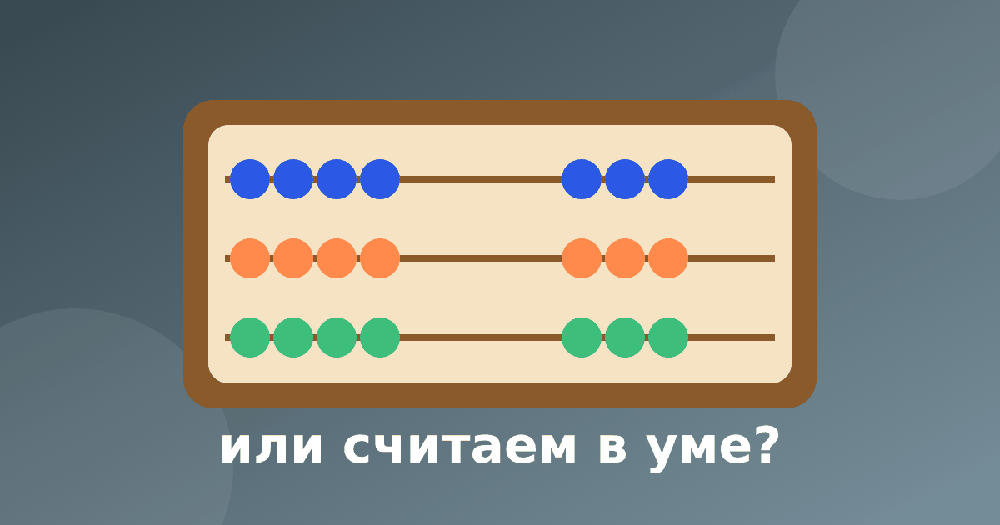

Ментальная арифметика для детей: чем отличается от обычного устного счёта

Ментальная арифметика для детей сегодня на слуху: рекламу курсов можно встретить у многих. Естественно возникает вопрос: нужен ли отдельный курс или хватит обычного устного счёта дома? Мы делаем тренажёр по устному счёту, поэтому скажем о своей позиции сразу: мы не знаем вашего ребёнка и не станем утверждать, что один путь лучше другого. Ниже просто разберём, чем они отличаются и на что смотреть при выборе.
Что такое ментальная арифметика
Это метод, в котором ребёнок сначала учится считать на абакусе, то есть на специальных счётах. Потом абакус убирают, а ребёнок представляет его в воображении и мысленно двигает бусины. Занятия обычно проходят в центрах, по программе с уровнями, с домашними заданиями. Возраст набора, длительность курса и стоимость у разных центров различаются, поэтому всё это нужно уточнять у конкретной организации.
Что такое обычный устный счёт
Обычный устный счёт опирается на разряды, состав числа и приёмы. Абакуса и воображаемых счётов здесь нет: ребёнок учится раскладывать числа. Пример: 38 + 27. Берём 2 из 27 и достраиваем 38 до 40, остаётся 25, итого 40 + 25 = 65. Другой пример: 64 − 28 = 64 − 20 − 8 = 44 − 8 = 36.
Эти приёмы подробно описаны в статьях про сложение в уме для 2 класса и про вычитание в уме. Наш тренажёр «Устный счёт» относится именно к этому варианту: это обычный устный счёт без абакуса. В нём 9 модулей, среди них «Состав числа» (открыт бесплатно), «Сложение до 20», «Вычитание до 20», «Сложение через десяток» и «Дополнение до 100». Есть числовая лента и кнопка «Объясни по-другому».
Чем они отличаются на практике
- Опора: в ментальной арифметике это образ абакуса, в обычном устном счёте разряды и состав числа.
- Формат: курс идёт по расписанию с педагогом, домашний устный счёт можно вписать в любые 5–10 минут.
- Организация: на курс нужно записаться и ходить, домашние занятия можно начать сегодня.
- Подача: на курсе много внимания уделяют скорости, дома скорость можно вообще не засекать.
Чего мы не утверждаем: что один подход лучше развивает память или «мышление». Надёжных выводов, на которые мы могли бы сослаться, у нас нет, поэтому лучше ориентироваться на то, нравится ли ребёнку и получается ли у него. Про связь счёта и памяти мы писали отдельно: устный счёт и память.
Как понять, нужен ли курс
- Сформулируйте цель: быстрее считать в школе, интерес ребёнка, чем-то занять свободное время.
- Спросите центр о программе, возрасте, пробном занятии и о том, сколько времени занимают домашние задания.
- Посмотрите на реакцию ребёнка после пробного занятия: интересно ему или тревожно.
- Проверьте результат простым примером: пусть решит 46 + 38 в уме и расскажет ход. Правильный ответ 84, но важнее, чтобы он смог объяснить, как получил его.
- Не сравнивайте ребёнка с другими: о скорости читайте в статье про скорость устного счёта.
Можно ли совмещать
Многие семьи так и делают: ребёнок ходит на курс, а дома закрепляет школьные приёмы с десятками и единицами. Это нормально, если нагрузка не превращается в усталость. Если решили заниматься дома, пригодится план занятий по устному счёту на месяц без давления.
Частые вопросы
С какого возраста можно начинать?
Центры называют разный возраст начала, это стоит уточнять у них. Для домашнего устного счёта ориентир не возраст, а готовность: посмотрите статью про устный счёт для дошкольников.
Нужна ли ментальная арифметика для школы?
Школьная программа обычно не требует абакуса: в ней используются обычные приёмы вычислений. Курс остаётся дополнительным, и решение принимает семья.
Устный счёт или ментальная арифметика: что выбрать, если сомневаетесь?
Можно начать с домашнего устного счёта по 5–10 минут в день и посмотреть, как ребёнок реагирует. Если захочется большего, сходите на пробное занятие в центр и сравните ощущения.
Если решите начать с домашнего варианта, тренажёр «Устный счёт» даёт для этого готовую последовательность модулей, а «Состав числа» открыт бесплатно. Выбор между кружком и домашними занятиями не экзамен для родителя: любой путь работает, если ребёнок занимается регулярно, не боится ошибаться и может объяснить решение своими словами.